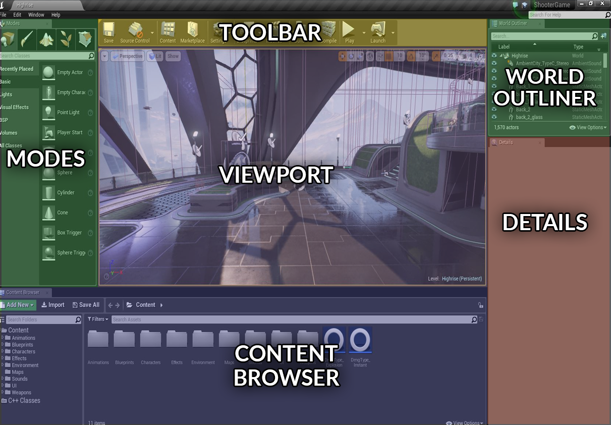
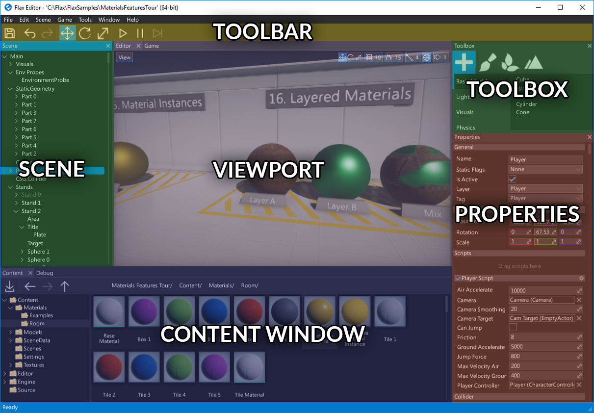

Flax for UE4® developers
Flax and Unreal have many similarities (materials pipeline, physics engine) and share many concepts, however there are a few differences. This page helps Unreal Engine 4 developers to translate their existing experience into the world of Flax Engine.
Warning
Warning! Once you switch from Unreal to Flax you will love this engine!
Editor
Flax Editor and Unreal Editor are very similar. You can see the color-coded, highlighted areas on screenshots of both editors that have common functionalities. Flax Editor layout is also highly customizable so you can drag and drop windows around to adapt the editor to your workflow.


Tip
With Flax Editor, you don't have to wait for 15 minutes before the project opens like in UE4. We are sorry that you had to waste so much time.
Terminology
This section contains the most common terms used in UE4 and their Flax equivalents (or rough equivalent). Flax keywords link directly to more in-depth information inside the documentation.
| Unreal | Flax |
|---|---|
| Actor | Actor |
| Blueprint | Prefab + Visual Script |
| C++ | C++ and C# |
| World Outliner | Scene Window |
| Details Panel | Properties Window |
| Content Browser | Content Window |
Project

Flax projects structure is similar to UE4 projects. The editor uses Cache folder to keep temporary data. Also, Content folder works the same way as in Unreal (assets-only), while Source directory is used to keep all C# and C++ scripts.
Flax also generates a solution and project files for your game scripts.
See Flax projects structure page to learn more about the projects in Flax Engine.
Assets
Flax also uses binary asset files with extension .flax (instead of .uasset). We are using our own binary format that is well optimized for scalability and streaming. Other assets are usually stored in Json format (scenes, settings, etc.).
Flax supports the most popular asset files formats (for 3D models and textures) so you can import your game content.
See Assets page to learn more about importing and using game assets.
Scenes and Actors
Flax doesn't use components to build scene objects logic. We only use Actors. Each Actor has its own type (e.g. point light, box collider) and a collection of attached scripts. This means, in Flax the scene object hierarchy is created with Actors.
However, you can still use the entity-component design with your scripts because every actor can have scripts.
You can use GetChild<T>()/GetScript<T>() methods in your scripts to access the other objects.
In Flax, Scene object is also an Actor so you can access it like any other Actor. This means that Scenes can have their own scripts and be transformed like other objects.
Also, multiple actors can have the same name and you can also move assets whenever you like because Flax uses unique IDs of the objects for tracking. This unlocks your development speed. We don't want to constrain your development to some ancient-design but to allow you to iterate faster and create beautiful games even easier.
Scripting
When it comes to game scripting, there is a significant difference between Unreal and Flax. Firstly, we support both C++ and C# languages to write game code and Visual Scripting as an addition. Using Visual Scripts or C# helps with rapid game development and simplifies the development while writing parts of the gameplay in C++ can benefit the performance. The Flax Engine core itself is written in C++, while Flax Editor is mostly written in C#.
You can create C# and C++ files with script classes that provide a gameplay logic. Then scripts can be attached to the actors and used in a game. Our scripting C# API is an open-source project and can be found here. All contributions are welcome.
Here is an example script that has been written for Unreal and Flax which prints the next number every frame.
- Unreal
#pragma once
#include "GameFramework/Actor.h"
#include "MyScript.generated.h"
UCLASS()
class AMyScript : public AActor
{
GENERATED_BODY()
int Count;
AMyScript()
{
// Allows Tick() to be called
PrimaryActorTick.bCanEverTick = true;
}
void BeginPlay()
{
// Called when the game starts or when spawned
Super::BeginPlay();
Count = 0;
}
void Tick(float DeltaSeconds)
{
// Called every frame
Super::Tick(DeltaSeconds);
GLog->Log(FString::FromInt(Count++));
}
};
- Flax
using FlaxEngine;
public class MyScript : Script
{
int Count;
public override void OnStart()
{
// Use this for initialization
Count = 0;
}
public override void OnUpdate()
{
// Update is called once per frame
Debug.Log(Count++);
}
}
See Scripting documentation to learn more about scripts in Flax.
Unreal and its logo are trademarks of Epic Games, Inc.